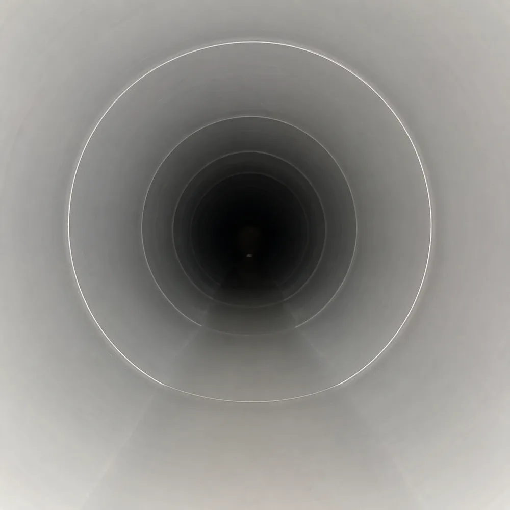
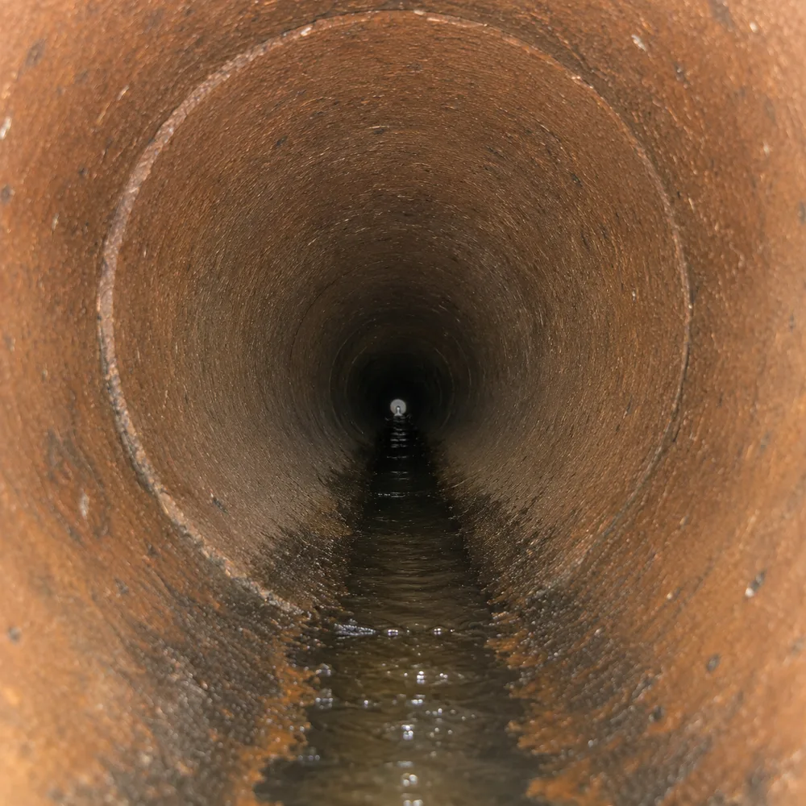
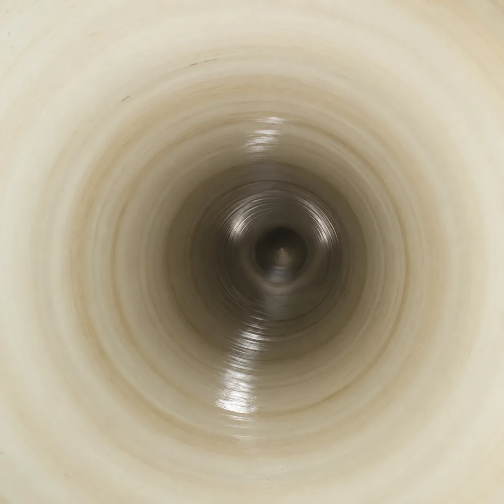
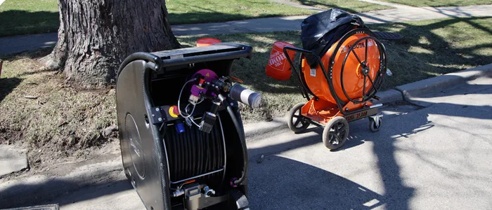

Trenchless Sewer Line Repair
Don't tear up your yard or driveway for a sewer repair.
Get a clear look inside your line before a small issue turns into an expensive dig. Using waterproof cameras with strong LED lighting, we show you exactly what’s going on, so you can choose the right fix with confidence.

Homeowners aren’t always experiencing sewer line problems when booking a camera inspection. This service isn’t only for problems, it’s also used for preventative checks and for locating lost items.
Dropping a ring down the drain doesn’t mean it’s lost forever. Our camera inspections can help you locate jewelry and other valuables inside the sewer line. It’s worth a look before you assume it’s gone for good.
We’ll assess the condition of your sewer line before you buy or sell a property. If you’re planning to remodel a kitchen or bathroom, a camera inspection will help you understand if your plumbing can handle the new fixtures before work starts.
Routine checks help keep your plumbing system in good shape. A camera inspection can identify issues before they become major problems. If you’re planning two or more inspections a year, it’s worth looking into our membership program.
Not every inspection starts with a sewer line problem, but when it does, your sewer line was probably trying to warn you. Here’s what to watch for:
No digging required. Here’s exactly how we get eyes on your sewer line and what you walk away with.
We start by locating your main drain cleanout, whether it’s inside or outside your home. That’s where the camera goes in: no digging, no cutting into walls or floors.
We send in a waterproof camera with strong LED lighting, built to travel through the pipe and send back a clear, real-time picture of what’s inside.
As the camera moves through the line, we watch the footage live and mark the exact location of anything we find: root intrusion, cracks, corrosion, blockages, pipe separation, or offset joints. We save the footage and give you a copy for your records.
If a cleanout is hard to reach or blocked, we’ll tell you rather than force our way in or damage anything to get access.
Every sewer line is different depending on what it’s made of and how it’s held up over the years. Here’s what the camera can identify.
Common in older homes, built to last decades but corrodes and cracks from the inside as it ages.

Lightweight and resistant to corrosion, though it can still crack, sag, or separate at the joints.

Common in homes built before the 1980s, prone to root intrusion and cracked joints.

A pipe that’s already been repaired with a liner. We check the lining itself for wear or new damage.

Tree roots work through small cracks or loose joints and grow inside the line, restricting flow.

A low spot in the line where water and waste collect instead of draining, usually from ground settling.

Physical damage to the pipe wall, from age, ground movement, or nearby digging.

Two sections of pipe have pulled apart at the joint, leaving a gap for waste and roots.

We answer calls 24/7, even on weekends and holidays. Once you schedule a visit, your technician calls or texts on the way and shows up right around the promised time.
Our technicians know sewer systems inside and out, and they’ll answer every question you have, honestly and in plain language, before, during, and after the inspection.
We invest in our own camera equipment, so we’re never waiting on a rental company to get the right tool to your home.
We stand behind every job we perform. Every inspection is fully documented, so you always have proof of exactly what we found.
Watch a quick walkthrough of when homeowners call for a sewer camera inspection, from pre-purchase checks to lost valuables, and what the process actually looks like.
"I had an exceptional experience with Andreas from J. Blanton Plumbing. He came out to perform a camera inspection of my sewer line and was incredibly professional, thorough, and knowledgeable. He took the time to walk me through everything on the screen, explained each detail clearly, and answered all my questions with patience and honesty. I've dealt with many service professionals over the years, and I can honestly say this was the best experience I've ever had. Andreas went above and beyond, and I couldn't be happier with the level of service he provided. Highly recommended."
"Josh came out and was awesome! Hi communication was perfect!! Right around the promised time, he called and texted to let me know he was on his way and would arrive within the hour. 45 minutes later he arrived, inspected the issue, and walked me through what was needed and the price. He finished the work and showed me everything via camera and showed me an issue that could cause some additional repairs in the future. He was fast, thorough, and all on an early Saturday morning! Thank you Josh and J Banton!!"
"Had a camera inspection of a clogged sewer drain by George. He was very helpful, polite, professional and informative. We ended up moving forward with a sewer trenchless liner service and look forward to a good experience for the main service."
Cost depends on the length of your line, access points, and what we find along the way.
The cost of a sewer camera inspection depends on factors like the length of your line, how many access points we need to check, and what we find along the way. Give us a call and we’ll walk you through it.
It depends on the length of your line and what we find along the way.
The length of your sewer line and what we find along the way determines how long an inspection takes. A shorter, clear line goes quickly, a longer or more complicated one takes more time.
No. We access your line through an existing cleanout, so no digging or cutting is required.
No. We access your line through an existing cleanout, so there’s no digging or cutting into walls or floors. If a cleanout is hard to reach, we’ll tell you rather than force our way in.
Recurring backups, sewage odors, or unexplained water damage and mold are the main signs.
Recurring drain backups, sewage odors, or unexplained water damage and mold are all signs it’s worth having your line inspected. A camera inspection shows us exactly what’s going on instead of guessing.
We locate your cleanout, send a camera through while you watch live, then give you a full report.
We start by locating your main drain cleanout, then send a camera through the line while you watch the footage live. Afterward, we give you a report with photos, video, and the exact location of anything we found.
It’s a smart step. A camera inspection shows the real condition of the line before you buy or sell.
It’s a smart step. A camera inspection shows you the real condition of the sewer line, so you know what you’re getting into before you buy or sell.
Annual Protection Plan
Prevent catastrophes before they disrupt your life. The No Drip Club ensures your waste and sewer lines are monitored and serviced regularly by J. Blanton’s absolute best.

Don't tear up your yard or driveway for a sewer repair.

Clears most blockages fast.

Fixes a damaged section of pipe without replacing the whole line.

For lines too far gone for a targeted repair.

Flush out older buildup with high-pressure water.

Keeps sewage moving up and out, even during heavy rain.

Routine service that catches small issues before they become a backup.

New lines for new builds, conversions, and system upgrades.

Dispatched nights, weekends, and holidays.
We’ve inspected sewer lines for over 30 years, and we still start every job the same way: no guessing, no pressure. Give us a call and find out what’s really going on in your line.